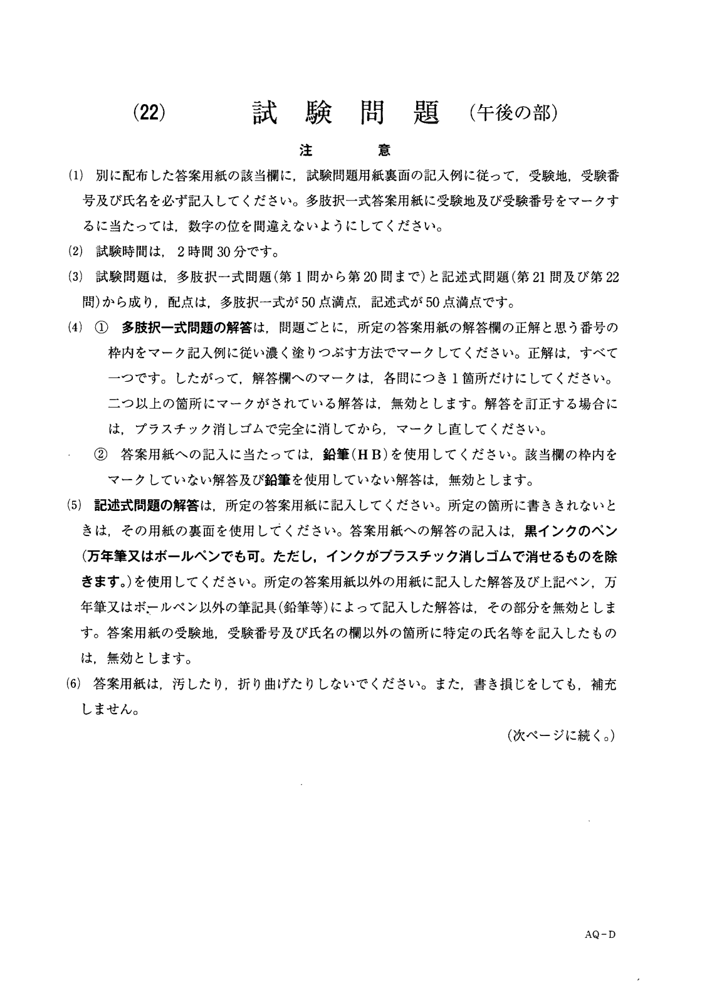
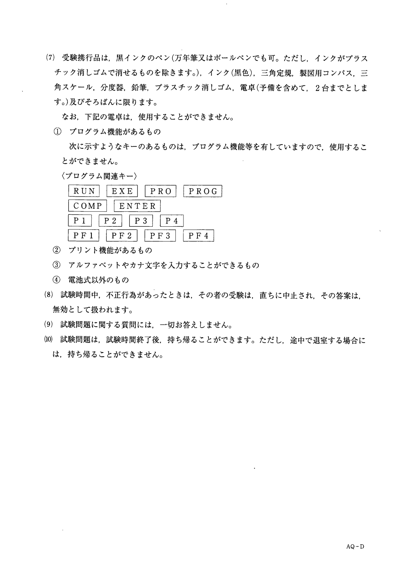
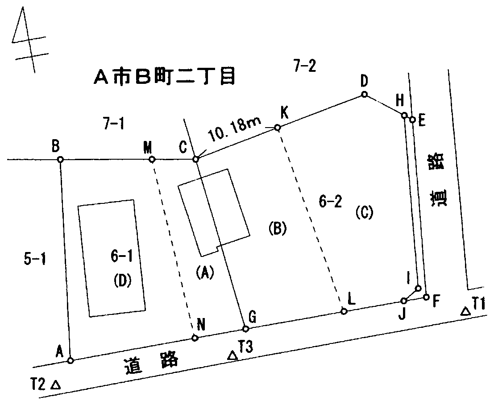
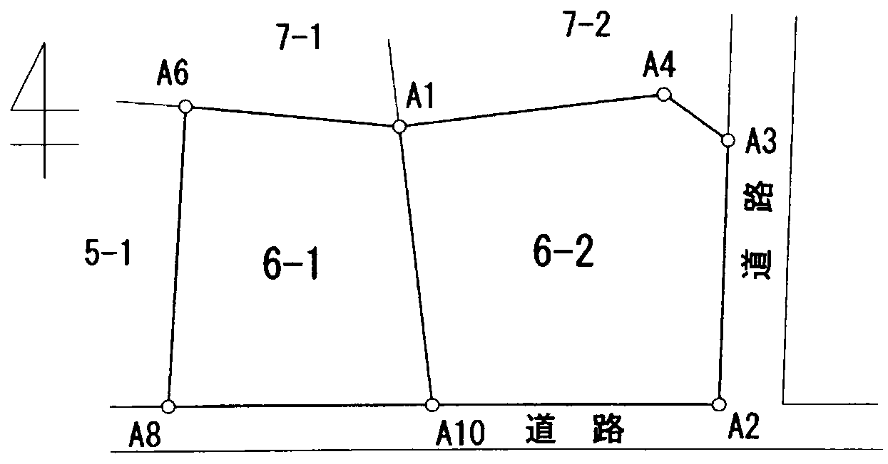
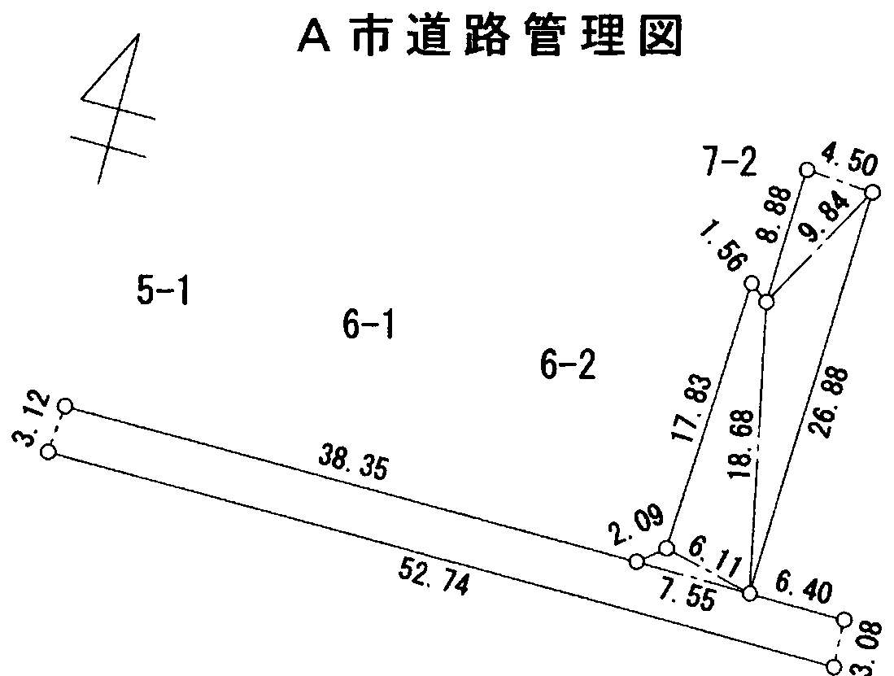
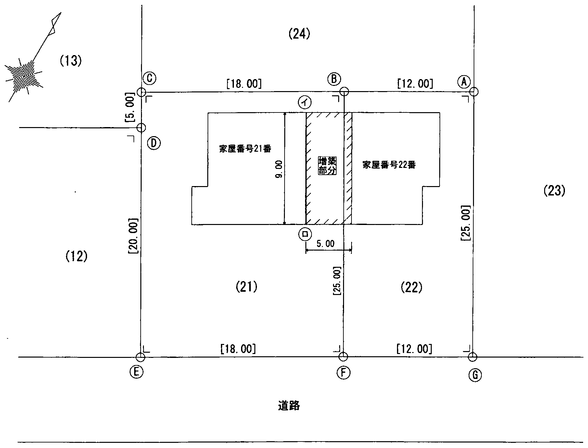
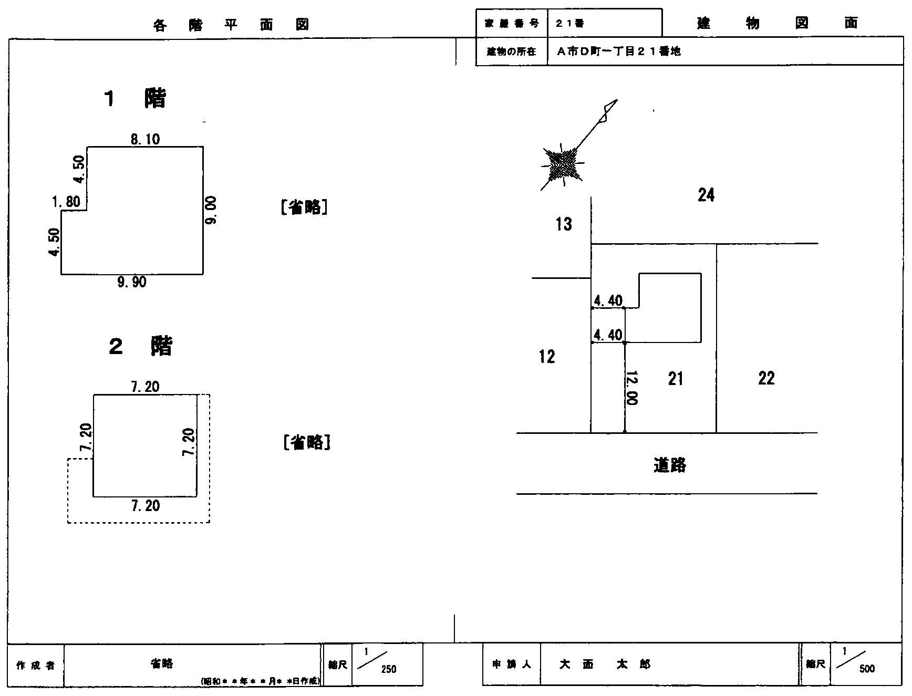
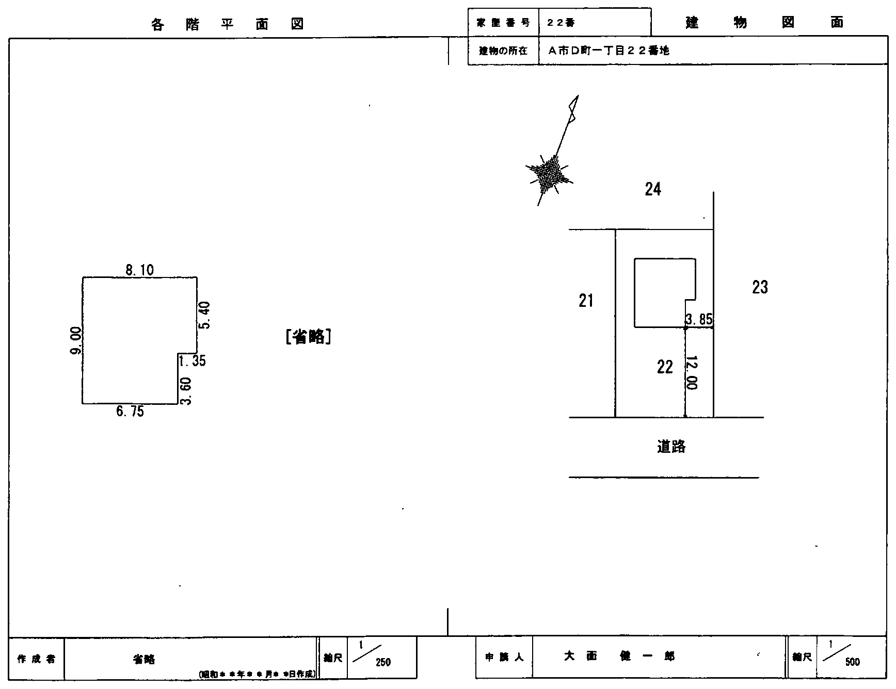
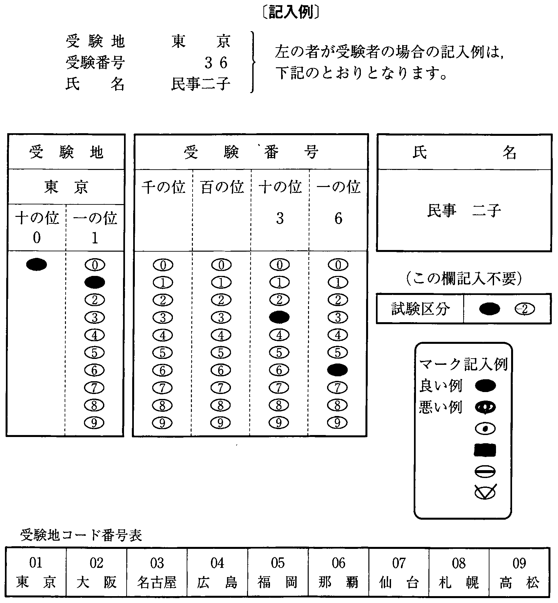

注意（問題冊子の表紙）


多肢択一式（第1問〜第20問）
第1問
Aは，BからB所有の甲不動産を売却する代理権を与えられていないにもかかわらず，その事情について善意無過失のCとの間で，Bの代理人として甲不動産を1,000万円で売却する旨の売買契約を締結し，Cから売買代金1,000万円を受け取った。この事例に関する次のアからオまでの記述のうち，判例の趣旨に照らし誤っているものの組合せは，後記1から5までのうちどれか。
- アCがAに対し無権代理行為による損害賠償として1,000万円を請求したところ，Aが死亡してその地位をBが単独で相続した場合には，Bは，無権代理行為の追認を拒絶することにより，無権代理行為による損害賠償責任を免れることができる。
- イCがBに対し甲不動産の引渡しを求めたところ，BがAの無権代理行為の追認を拒絶した後，Bが死亡してその地位をAが単独で相続した場合には，Aは，Cから当該売買契約に基づく甲不動産の引渡請求をされても，Bの上記追認拒絶の効果を主張してCの請求を拒むことができない。
- ウCがBに対し甲不動産の引渡しを求めたところ，Bが死亡してその地位をAが他の相続人とともに共同で相続した場合には，Aは，Cから当該売買契約に基づく甲不動産の引渡請求をされたときは，他の相続人とともに無権代理行為の追認を拒絶してCの請求を拒むことができる。
- エCがBに対し甲不動産の引渡しを求めたところ，Bが死亡してその地位をAが単独で相続した場合には，Aは，Cから当該売買契約に基づく甲不動産の引渡請求をされたときは，無権代理行為の追認を拒絶してCの請求を拒むことができない。
- オCがBに対し甲不動産の引渡しを求めたところ，Aが死亡してその地位をB及びAB間の子Dが共同で相続した後Bが死亡してその地位をDが単独で相続した場合には，Dは，Cから当該売買契約に基づく甲不動産の引渡請求をされたときは，無権代理行為の追認を拒絶してCの請求を拒むことができない。
1 アイ2 アエ3 イオ4 ウエ5 ウオ
第2問
次のアからオまでの事例のうち，判例の趣旨に照らしAがBに対して土地の所有権を主張することができないものの組合せは，後記1から5までのうちどれか。
- アCが所有する土地をAに売却したが，所有権の移転の登記をしないうちに，Bが権原がないのにその土地を占拠した。
- イCが所有する土地をAに売却したが，所有権の移転の登記をしないうちに，Cの一般債権者Bがその土地について仮差押えをした。
- ウBが所有する土地をCに売却したが，所有権の移転の登記をしないうちに，CがAにその土地を売却した。
- エBが所有する土地をCに売却して所有権の移転の登記をし，CがAにその土地を売却したが，その所有権の移転の登記をする前に，BがCの代金未払を理由にBC間の売買契約を解除した。
- オ未成年者Aは，法定代理人Cの同意を得ないで，A所有の土地をDに売却し，Dは，Aが未成年者でDへの売却についてCの同意を得ていないことを知らないBに対し，その土地を売却した。その後，CがAのDに対する売買の意思表示を取り消した。
1 アイ2 アウ3 イエ4 ウオ5 エオ
第3問
公道に至るための他の土地の通行権に関する次のアからオまでの記述のうち，判例の趣旨に照らし正しいものの組合せは，後記1から5までのうちどれか。
なお，甲土地，乙土地及び丙土地の位置関係は，下図のとおりであり，甲土地から公道に出るためには，乙土地を通行するより丙土地を通行する方が損害が少ないものとする。
- アDが丙土地を所有している場合において，Aが所有する一筆の土地を甲土地と乙土地に分筆して，甲土地をBに譲渡し，その後，乙土地をCに譲渡したときは，Bは，乙土地について通行権を主張することができる。
- イBが丙土地を所有している場合において，必要があるときは，甲土地を所有するAは，Bが所有する丙土地に公道に至るための通路を開設することができるが，甲土地の地上権者であるCは，丙土地に公道に至るための通路を開設することができない。
- ウCが丙土地を所有している場合において，Aが所有する一筆の土地を甲土地と乙土地に分筆して，乙土地をBに譲渡したときは，Aは，乙土地について通行権を主張することができない。
- エCが乙土地及び丙土地を所有している場合において，所有者であるAから甲土地を譲り受けたBが甲土地についてAから所有権の移転の登記を得ていないときは，Bは，乙土地及び丙土地のいずれについても通行権を主張することができない。
- オCが丙土地を所有し，Aがその所有に係る甲土地及び乙土地のうち乙土地について抵当権を設定していた場合において，当該抵当権の実行としての競売による競落により，Bが乙土地を取得したときは，Aは，乙土地について通行権を主張することができる。
〔図〕
1 アエ2 アオ3 イウ4 イオ5 ウエ
第4問
隣接する甲土地と乙土地の合筆の登記に関する次のアからオまでの記述のうち，正しいものの組合せは，後記1から5までのうちどれか。
- ア甲土地及び乙土地について，いずれも敷地権である旨の登記がされている場合には，合筆の登記をすることができない。
- イ甲土地及び乙土地について，いずれも先取特権の登記がされている場合であっても，当該先取特権の登記の目的並びに登記原因及びその日付が同一であれば，合筆の登記をすることは妨げられない。
- ウ甲土地及び乙土地について，いずれも破産手続開始の登記がされている場合には，その後いずれも破産手続終結の登記がされているときであっても，破産手続開始の登記を抹消しなければ，合筆の登記をすることができない。
- エ甲土地及び乙土地について，いずれも信託の登記がされている場合であっても，当該信託の登記について，信託目録に記録された登記事項のすべてが同一であれば，合筆の登記をすることは妨げられない。
- オ甲土地及び乙土地について，不在者の財産管理人が合筆の登記を申請するには，家庭裁判所の許可を得なければならない。
1 アイ2 アエ3 イオ4 ウエ5 ウオ
第5問
建物の合併に関する次のアからオまでの記述のうち，誤っているものの組合せは，後記1から5までのうちどれか。
- ア主である建物の居宅と附属建物の車庫から構成されている所有権の登記がない甲建物について，主である建物を取り壊し，附属建物であった車庫を主である建物として登記した後，取り壊した跡地に居宅が完成したことから，新築した居宅を主である建物とし，既存の車庫を附属建物とするには，新築した居宅について建物の表題登記をした後に，当該建物に甲建物を合併する登記の方法によらなければならない。
- イ甲建物と乙建物について，いずれも登記名義人として同じ共有者が同じ持分で登記されている場合には，甲建物と乙建物の合併の登記は，共有者の一名が単独で申請することができる。
- ウ甲建物と乙建物の双方に登記されている所有権移転の登記に，いずれも買戻しの特約の登記がある場合には，買戻しの特約の登記の申請の受付年月日，受付番号並びに登記原因及びその日付が同じであっても，甲建物と乙建物を合併する登記をすることはできない。
- エ甲建物と乙建物の所有権の登記名義人が同じである場合において，登記名義人が住所を移転し，甲建物については住所の変更の登記がされているが，乙建物については住所の変更の登記がされていないときは，登記名義人は，住所の変更を証する情報を提供して，甲建物と乙建物を合併する登記を申請することができる。
- オ甲建物の附属建物として登記されている区分建物を分割して，これを当該区分建物と接続する区分建物である乙建物に合併する登記の申請をするに当たっては，分割の登記及び合併の登記を一の申請情報によって申請することができる。
1 アイ2 アウ3 イエ4 ウオ5 エオ
第6問
共用部分である旨の登記に関する次のアからオまでの記述のうち，誤っているものの組合せは，後記1から5までのうちどれか。
- ア表題登記がある区分建物について，これを共用部分とする旨の規約を定めたときは，当該建物の表題部所有者は，当該規約を定めた日から1か月以内に，共用部分である旨の登記の申請をしなければならない。
- イ共用部分である旨の登記がある建物について，床面積に変更があったときは，当該建物の所有者は，その変更の日から1か月以内に，表題部の変更の登記を申請しなければならない。
- ウ共用部分である旨の登記の申請をする場合において，当該共用部分である建物が当該建物の属する一棟の建物以外の一棟の建物に属する建物の区分所有者の共用に供されるものであるときは，当該区分所有者が所有する建物の家屋番号を申請情報の内容として提供しなければならない。
- エ抵当権の設定の登記がある建物について，これを共用部分とする旨の規約を定めたときは，当該抵当権の登記名義人の承諾がなくても，共用部分である旨の登記の申請をすることができる。
- オ共用部分である旨の登記がある建物について，共用部分である旨を定めた規約を廃止した後に所有権を取得した者は，その所有権の取得の日から1か月以内に，当該建物の表題登記を申請しなければならない。
1 アウ2 アエ3 イウ4 イオ5 エオ
第7問
登記が完了した場合に登記官がする通知に関する次のアからオまでの記述のうち，正しいものは，幾つあるか。
- ア表題部の所有者欄にA，B及びCの3人の共有の登記がされている土地について，Aが地目の変更の登記を申請し，登記が完了した場合には，登記官は，A及びBに対して当該登記が完了した旨を通知すれば足りる。
- イ表題部の所有者欄にA，B及びCの3人の共有の登記がされている土地について，Aの債権者Dが地目の変更の登記を申請し，登記が完了した場合には，登記官は，A及びDに対して当該登記が完了した旨を通知すれば足りる。
- ウ表題部の所有者欄にA，B及びCの3人の共有の登記がされている土地について，職権による地目の変更の登記が完了した場合には，登記官は，Aに対して当該登記が完了した旨を通知すれば足りる。
- エ表題部の所有者欄にA，B及びCの3人の共有の登記がされている土地について，Dが当該土地の所有者をD，E及びFに更正する旨の表題部所有者についての更正の登記を申請し，登記が完了した場合には，登記官は，D及びEに対して当該登記が完了した旨を通知すれば足りる。
- オ表題部の所有者欄にA（持分6分の1），B（持分6分の2）及びC（持分6分の3）の3人の共有の登記がされている土地について，Cが当該土地の所有者をA（持分6分の3），B（持分6分の1）及びC（持分6分の2）に更正する旨の表題部所有者である共有者の持分についての更正の登記を申請し，登記が完了した場合には，登記官は，A及びCに対して当該登記が完了した旨を通知すれば足りる。
1 1個2 2個3 3個4 4個5 5個
第8問
登記の申請の取下げに関する次のアからオまでの記述のうち，誤っているものの組合せは，後記1から5までのうちどれか。
- ア登記が完了した後は，理由のいかんを問わず，その申請を取り下げることができない。
- イ書面申請の方法によって行った登記の申請を取り下げる場合には，登記官に対し，その申請書にはり付けた登録免許税の印紙で消印されたものを再使用したい旨の申出をすることができる。
- ウ電子申請の方法によって行った登記の申請は，その申請を取り下げる旨の情報を記載した書面を登記所に提出する方法によって，取り下げることができる。
- エ代理人が書面申請の方法によって行った登記の申請を取り下げた場合には，申請書及び代理権限証書を除いた添付書面が還付される。
- オ一の申請情報により二以上の登記の申請を行った場合であっても，そのうちの一部の申請を取り下げることができる。
1 アイ2 アエ3 イオ4 ウエ5 ウオ
第9問
登記申請手続の委任に関する次のアからオまでの記述のうち，正しいものの組合せは，後記1から5までのうちどれか。
- ア土地の分筆の登記の申請の委任をした者がその申請の前に死亡した場合には，代理人は，当該土地の分筆の登記を申請することができない。
- イ法人から委任を受けて登記の申請を行う場合には，委任を受けた後に法人の代表者が替わったときであっても，代理人は，当該登記の申請をすることができる。
- ウ市町村から登記の嘱託の委任を受けた代理人が当該登記の申請をする場合には，申請情報に添付すべき市町村長が職務上作成した委任状は，作成後3か月以内のものであることを要しない。
- エ土地の合筆の登記の申請の委任を受けた代理人が，当該申請を補正のために取り下げるには，委任者から特別の委任を受けなければならない。
- オ土地の合筆の登記の申請の委任を受けた代理人が死亡した場合には，その一般承継人は，当該代理権を行使して当該登記の申請をすることができる。
1 アイ2 アオ3 イウ4 ウエ5 エオ
第10問
筆界特定の申請に関する次のアからオまでの記述のうち，正しいものの組合せは，後記1から5までのうちどれか。
- ア甲土地の所有者は，甲土地と一点のみで接している乙土地を対象土地として筆界特定の申請をすることはできない。
- イ甲土地と隣接している乙土地のうち，甲土地と隣接していない部分を時効取得した者は，甲土地を対象土地として筆界特定の申請をすることはできない。
- ウ甲土地の所有権移転の仮登記の登記名義人は，隣接する乙土地を対象土地として筆界特定の申請をすることができる。
- エ甲土地と乙土地の筆界について既に甲土地の所有者を申請人とする筆界特定登記官による筆界特定がされていた場合であっても，その資料となった文書が偽造されたものであることが判明したときは，乙土地の所有者は，改めて甲土地を対象土地として筆界特定の申請をすることができる。
- オ甲土地と乙土地の筆界について，甲土地の所有者が民事訴訟の手続により筆界の確定を求める訴えを提起し，当該訴えが裁判所に係属しているときは，乙土地の所有者は，筆界特定の申請をすることはできない。
1 アエ2 アオ3 イウ4 イエ5 ウオ
第11問
地積に関する更正の登記についての次のアからオまでの記述のうち，正しいものは，幾つあるか。
- ア抵当権の登記がある土地の地積に関する更正の登記の申請をする場合において，その土地の地積が減少するときは，抵当権者の承諾があったことを証する情報を提供しなければならない。
- イ地図に表示された土地の区画又は地番に誤りがあるため，当該土地の所有権の登記名義人が地図の訂正の申出をする場合において，当該土地の登記記録の地積に錯誤があるときは，地積に関する更正の登記の申請を併せてしなければならない。
- ウ地積に関する更正の登記の申請と合筆の登記の申請は，一の申請情報によって申請することができる。
- エ分筆の登記の申請をするに当たり，申請人が分筆線の位置を誤って申請してしまい，それぞれの地積が予定していた地積と異なってしまった場合には，分筆の登記がされた後の両土地について，地積に関する更正の登記の申請をすることができる。
- オ表題部所有者又は所有権の登記名義人は，登記されている地積と実際の地積が相違することが判明した日から1か月以内に，地積に関する更正の登記を申請しなければならない。
1 1個2 2個3 3個4 4個5 5個
第12問
地目に関する次のアからオまでの記述のうち，正しいものは，幾つあるか。
- ア水面のうち，かんがい用水でない水の貯留池の地目は，ため池である。
- イ畑の耕作を放棄したことによって雑草，かん木類が生育する土地の地目は，雑種地である。
- ウ高圧線の下にある建物の敷地である土地の地目は，宅地である。
- エ都市計画法における工業専用地域に指定された地域内に建設された工場の敷地である土地の地目は，工場用地である。
- オ地目が山林である土地において，建物の敷地とするための造成工事は完了したが，建物の建築工事が完了しておらず，進行中である場合には，当該土地の地目は，雑種地である。
1 1個2 2個3 3個4 4個5 5個
第13問
1棟の建物として登記されている建物の中間部分を取り壊し，そこに2面の障壁を施して空間を設け，物理的に2棟の建物とし，これによりその一方が他方の附属建物となることを，本問において「建物の分棟」という。この建物の分棟をした場合の登記（本問において「建物の分棟の登記」という。）に関する次のアからオまでの記述のうち，正しいものの組合せは，後記1から5までのうちどれか。
- ア建物の分棟をした場合には，分棟前の建物の表題部所有者又は所有権の登記名義人は，当該建物の分棟があった日から1か月以内に，建物の分棟の登記の申請をしなければならない。
- イ共有名義の建物の分棟の登記の申請は，分棟前の建物の共有者の全員からでなければ，することができない。
- ウ所有権の登記がある建物の分棟の登記を申請するときは，登録免許税を納付しなければならない。
- エ建物の分棟の登記の申請は，分棟前の建物についての表題部の抹消の登記の申請と分棟後の建物についての表題登記の申請を一の申請情報によってしなければならない。
- オ分棟前の建物の所有者が分棟後の2棟の建物を別個の建物とする場合には，建物の分棟の登記の申請と建物の分割の登記の申請を一の申請情報によってすることができる。
1 アエ2 アオ3 イウ4 イエ5 ウオ
第14問
建物の表示に関する登記の申請をする場合に提供する添付情報に関する次のアからオまでの記述のうち，正しいものは，幾つあるか。
- アいずれも所有権の登記がある建物について合併の登記の申請をするときは，合併に係る建物のうちいずれか1個の建物の所有権の登記名義人の登記識別情報を提供すれば足りる。
- イ区分建物の表題登記の申請をする場合において，敷地権の目的である土地に当該建物を管轄する登記所の管轄区域外にあるものがあるときは，当該土地の不動産番号を提供すれば，当該土地の登記事項証明書を提供する必要はない。
- ウ建物の表題登記の申請をするときは，当該建物の所有者についての住民基本台帳法第7条第13号に規定する住民票コードを提供すれば，当該所有者の住所証明情報を提供する必要はない。
- エ建物の合併の登記の申請をする場合において，合併前の双方の建物の各階平面図が登記所に備え付けられているときは，合併後の建物図面のみを提供すれば足り，合併後の各階平面図を提供する必要はない。
- オ二階建ての建物の二階部分を増築したことによる建物の表題部の変更の登記を申請する場合に提供する各階平面図は，二階部分のみの各階平面図で足りる。
1 1個2 2個3 3個4 4個5 5個
第15問
区分建物の表示に関する登記に関する次のアからオまでの記述のうち，誤っているものの組合せは，後記1から5までのうちどれか。
- ア区分建物の表題登記の申請をする場合において，当該区分建物が属する一棟の建物に属さない区分建物を附属建物とするときは，当該附属建物とする区分建物が属する一棟の建物に属する他の区分建物の表題登記の申請を併せてしなければならない。
- イ三つの区分建物で構成される一棟の建物に属する区分建物についての表題登記を申請する場合において，一つの区分建物についてのみ専有部分とその専有部分に係る敷地利用権の分離処分を可能とする規約を設定したときは，他の二つの区分建物についてのみ敷地権に関する事項を申請情報とすることができる。
- ウ表題登記のある建物で当該建物の敷地である土地のみに抵当権の設定の登記があるものについて敷地権付きの建物の区分の登記を申請する場合において，抵当権者が抵当権の消滅を承諾したことを証する情報が提供されたときは，当該抵当権の登記が消滅した旨の登記がされる。
- エ抵当権の設定の登記がある建物を2個に区分する建物の区分の登記を申請する場合において，抵当権者が一方の区分建物についてのみ当該抵当権の消滅を承諾したことを証する情報が提供されたときは，もう一方の区分建物の登記記録にのみ抵当権の設定の登記が転写される。
- オ区分建物の表題登記の申請をする場合において，建築基準法に基づき交付された確認済証上，建築場所として一棟の建物が所在する土地の地番のほかその土地に隣接する土地の地番が記載されているときは，当該隣接する土地の地番も当該区分建物の所在地番として申請情報の内容としなければならない。
1 アエ2 アオ3 イウ4 イエ5 ウオ
第16問
電子申請の方法（書面を提出する方法により添付情報を提供する場合を除く。）により表示に関する登記を申請する場合に登記所に提供する次のアからオまでの添付情報のうち，その情報が書面に記載されているときは，当該書面を電磁的記録に記録したもので，当該電磁的記録に当該電磁的記録の作成者の電子署名が行われているものを添付情報とすることができるものの組合せは，後記1から5までのうちどれか。
- ア建物の表題登記を代理人によって申請する場合に提供する当該建物の所有者が作成した代理権限を証する情報
- イ建物を増築したことにより建物の表題部の変更の登記を申請する場合に所有者が所有権を有することを証明する情報として提供する工事完了引渡証明情報
- ウ地役権の登記がある承役地の分筆の登記を申請する場合において，地役権設定の範囲が分筆後の土地の一部であるときに提供する，当該地役権設定の範囲を証する地役権者が作成した情報
- エ建物を取り壊したことにより建物の滅失の登記を代理人によって申請する場合に提供する代理人が作成した不動産登記規則第93条に規定する調査報告情報
- オ建物の合体の登記を申請する場合に提供する建物図面及び各階平面図
1 アイ2 アエ3 イウ4 ウオ5 エオ
第17問
不動産についての登記情報及び地図情報の公開に関する次のアからオまでの記述のうち，誤っているものの組合せは，後記1から5までのうちどれか。
- ア登記事項証明書及び登記事項要約書の交付は，いずれも電子情報処理組織を使用して請求することができる。
- イ地図が電磁的記録に記録されている場合には，当該記録された地図の内容を証明した書面の交付は，電子情報処理組織を使用して請求することができる。
- ウ建物の表題登記の申請情報に添付された表題部所有者となる者が所有権を有することを証する情報を記載した書面の閲覧は，請求人が利害関係を有する部分に限り請求することができる。※
- エ登記事項証明書の交付は，法務省令で定める場合を除いて，請求に係る不動産の所在地を管轄する登記所以外の登記所に対しても請求することができる。
- オ登記されていない不動産については，その不動産が未登記であることの証明書の交付を請求することができる。
1 アウ2 アオ3 イエ4 イオ5 ウエ
※ ウ 令和5年4月1日施行の不動産登記法改正により，図面以外の登記簿の附属書類の閲覧は，正当な理由があるときに，正当な理由があると認められる部分に限り請求することができるものに改められた（法121条3項）。
第18問
分筆の登記に関する次のアからオまでの記述のうち，誤っているものの組合せは，後記1から5までのうちどれか。
- ア共有物分割の裁判によって共有の土地が分割された場合において，一部の共有者が分筆の登記の申請に協力しないときは，他の共有登記名義人がその者に代位して当該土地の分筆の登記を申請することができる。
- イ所有権移転請求権保全の仮登記がされている甲土地から乙土地を分筆する場合には，分筆後の乙土地について仮登記権利者が権利の消滅を承諾したことを証する情報が提供されたときであっても，分筆後の乙土地の登記記録には当該仮登記が転写される。
- ウ甲土地を要役地とする地役権設定登記がされている乙土地を分筆する場合において，分筆後の土地の一部について地役権が存続するときは，甲土地の登記記録に記録されている承役地である不動産に関する事項については，職権で変更の登記がされる。
- エ競売の申立てによる差押えの登記がされている甲土地から乙土地を分筆する場合には，分筆後の甲土地について競売申立権者が差押えの消滅を承諾したことを証する情報が提供されたときであっても，分筆後の甲土地について差押えの登記の抹消をすることはできない。
- オ抵当権の設定の登記がされている甲土地から乙土地を分筆する場合において，分筆後の甲土地及び乙土地の2筆の土地について抵当権者が抵当権の消滅を承諾したことを証する情報が提供されたときは，甲土地の登記記録には抵当権が消滅した旨の記録がされ，乙土地の登記記録には抵当権の設定の登記は転写されない。
1 アイ2 アウ3 イオ4 ウエ5 エオ
第19問
登記識別情報に関する次のアからオまでの記述のうち，正しいものの組合せは，後記1から5までのうちどれか。
- ア所有権の登記がある土地の合筆の登記の申請を電子申請の方法でした場合における登記識別情報の通知は，申請人からの申出があっても，登記識別情報を記載した書面を送付して交付する方法ですることはできない。
- イ所有権の登記がある土地の合筆の登記の申請をする場合において，登記識別情報を失念したときは，登記識別情報を提供することができないことにつき正当な理由があるということはできない。
- ウ登記識別情報のある甲土地から乙土地を分筆した後，乙土地を丙土地に合筆する登記の申請をする際に提供すべき登記識別情報は，甲土地のものでよい。
- エ所有権の登記がある土地の合筆の登記がされた場合において，登記識別情報の通知を受ける特別の委任を受けた代理人があるときは，登記識別情報は，当該代理人に対して通知される。
- オ登記識別情報の通知を受けた登記名義人が死亡した場合には，その相続人は，登記識別情報の失効の申出をしなければならない。
1 アエ2 アオ3 イウ4 イオ5 ウエ
第20問
土地家屋調査士の登録に関する次のアからオまでの記述のうち，正しいものの組合せは，後記1から5までのうちどれか。
- ア土地家屋調査士となる資格を有する者が，土地家屋調査士となるため日本土地家屋調査士会連合会に登録申請書を提出するときは，その事務所を設けようとする地を管轄する法務局又は地方法務局を経由してしなければならない。
- イ土地家屋調査士が死亡したときは，その相続人は，遅滞なく，その旨を日本土地家屋調査士会連合会に届け出なければならない。
- ウ土地家屋調査士が他の法務局又は地方法務局の管轄区域内に事務所を移転しようとするときは，現に所属している土地家屋調査士会を経由して，日本土地家屋調査士会連合会に，所属する土地家屋調査士会の変更の登録の申請をしなければならない。
- エ所属する土地家屋調査士会の変更の登録の申請をした土地家屋調査士は，その申請の日から3か月を経過しても当該申請に対して何らかの処分がされないときは，当該申請が認められたものとみなすことができる。
- オ日本土地家屋調査士会連合会により身体又は精神の衰弱により業務を行うことができないことを理由に土地家屋調査士の登録を取り消された者は，当該処分に不服があるときは，法務大臣に対して行政不服審査法による審査請求をすることができる。
1 アイ2 アエ3 イオ4 ウエ5 ウオ
第21問（土地）
第21問C市D町三丁目1番2号に事務所を有する土地家屋調査士北野一郎が，下記見取図に示すA市B町二丁目6番2の土地（以下「本件土地」という。）の相続人から，本件土地に関して，相続の登記を行うために必要となる土地の表示に関する登記の申請について依頼されたものとして，後記の調査結果に基づき，別紙第21問答案用紙を用いて，後記の問に答えなさい。
〔見取図〕

(注)見取図中，A点からN点までの各点は，境界標の位置を示す。K点からL点を結んだ点線及びM点からN点を結んだ点線は，土地の分割線を示す。T1からT3までは，A市基準点を示す。(A)から(D)までの符号は，後記遺産分割協議書の添付図面（本問においては省略）の符号を転記したものである。当該添付図面にはH，I，Jの各点及び各点を結ぶ線の記載はない。
［土地家屋調査士北野一郎による調査結果］
(1)登記所における登記記録の調査結果
（表題部）
| 所在 | A市B町二丁目 |
|---|
| 地番 | 6番1 |
|---|
| 地目 | 宅地 |
|---|
| 地積 | ××.×× ㎡ |
|---|
| 所在 | A市B町二丁目 |
|---|
| 地番 | 6番2 |
|---|
| 地目 | 宅地 |
|---|
| 地積 | ××.×× ㎡ |
|---|
（権利部）
| 甲区 | 順位1番 所有権移転 |
|---|
| C市D町二丁目5番6号 杉山太郎 |
|---|
| 乙区 | なし |
|---|
なお，6番1と6番2の権利部は，同一であり，6番の最終の支号は，6番3である。また，本件土地については，平成8年3月6日に分筆の登記がされており，地積測量図を閲覧した際のメモは，下記のとおりである。
地積測量図のメモ

| 点名 | X座標 | Y座標 |
|---|
| A1 | 212.45 | 161.82 |
| A2 | 193.23 | 183.97 |
| A3 | 211.47 | 184.61 |
| A4 | 214.63 | 180.20 |
| A6 | 213.95 | 146.95 |
| A8 | 193.23 | 145.73 |
| A10 | 193.23 | 164.12 |
任意座標
(2)A市道路課における道路境界の調査結果
A市道路課において本件土地付近の道路境界について調査を行った結果，本件土地付近においてはA市によって道路拡幅事業が実施されており，杉山太郎との間で道路拡幅に関する協議が成立したとのことであった。同課の担当者である森山職員から聴き取りを行った結果は，以下のとおりである。
・平成20年12月15日に森山職員が杉山太郎宅を訪問し，図面等によって事業計画の説明を行い，計画の内容及び土地買収金額に関して協議した。
・平成21年3月10日に森山職員及び作業員が杉山太郎宅を訪問し，本人の立会いの下，協議内容に基づき道路拡幅位置に市コンクリート杭の埋標を行った。埋標後，道路境界承諾書に杉山太郎本人の署名と押印を受けた。
・当該境界標の実測成果に基づき，平成21年4月10日に道路管理図を作成した。
・現在は，北側の土地所有者との交渉中であり，協議が成立すれば，北側の道路拡幅土地と合わせて，道路拡幅の工事に着工する予定である。
・道路拡幅工事の完成後，すべての土地提供者に対し，土地買収代金を支払う。
森山職員から提示を受けた道路管理図は，下記のとおりである。

境界標はすべてA市コンクリート杭
(3)測量の結果
A市基準点であるT1からT3までを器械点として観測を行った結果，得られたデータは，以下のとおりである。
［A市基準点成果表］
| 名称 | X座標 | Y座標 |
|---|
| T1 | 510.94 | 507.05 |
| T2 | 510.98 | 464.24 |
| T3 | 510.51 | 482.27 |
［観測データ］
| 器械点 | 後視点 | 測点 | 水平角 | 平面距離 |
|---|
| T3 | T2 | N | 52°26′32″ | 3.414 m |
| T3 | T2 | G | 122°54′34″ | 3.345 m |
| T3 | T2 | L | 165°33′52″ | 12.323 m |
| T1 | T3 | J | 21°57′44″ | 6.511 m |
| T1 | T3 | F | 38°27′45″ | 3.830 m |
［測量によって得られた座標］
|
| A | 513.27 | 465.77 |
| B | 533.99 | 466.99 |
| E | 531.51 | 504.65 |
| H | 532.42 | 503.38 |
| I | 514.61 | 502.57 |
| M | 532.88 | 477.98 |
B点，G点にはコンクリート杭が，A点には金属標が，F点には鉄鋲が埋設されている。E点，H点，I点，J点にはA市コンクリート杭が埋設されている。C点，D点の境界標は，亡失していたため，関係者の確認を得た上で，平成8年の分筆時作成の地積測量図に基づいた復元位置にコンクリート杭を埋設した。北野一郎による検証の結果，現地の境界標と平成8年の分筆時作成の地積測量図の座標成果は整合していることが確認された。
分割点であるK点，L点，M点，N点には，申請人に位置を確認した上で，金属標を埋設した。なお，K点は，C点とD点を結ぶ直線上にあり，C点からK点までの距離は，10.18 mである。
A市基準点成果を用いて行う測量においては，距離に関する補正計算を行わないものとする。
(4)相続について
登記名義人である杉山太郎は，平成22年6月12日に死亡しており，その相続人によって遺産の分割協議が成立した。遺産分割協議書の内容は，以下のとおりである。
遺産分割協議書
平成22年6月12日に死亡した被相続人杉山太郎の遺産については，同人の相続人の全員において分割協議を行った結果，各相続人が次のとおり遺産を取得することに決定した。
1．相続人杉山良子が取得する財産
(1)A市B町二丁目6番1の土地のうち，添付する図面中(A)の部分
(2)A市B町二丁目6番2の土地のうち，添付する図面中(B)の部分
2．相続人杉山敏夫が取得する財産
(1)A市B町二丁目6番1及び6番2にまたがって存する建物
3．相続人杉山健二が取得する財産
(1)A市B町二丁目6番2の土地のうち，添付する図面中(C)の部分
4．相続人田中文子が取得する財産
(1)A市B町二丁目6番1の土地のうち，添付する図面中(D)の部分
(2)A市B町二丁目6番1上に存する建物
以上のとおり相続人全員による遺産分割の協議が成立したので，これを証するために本書を作成し，各自署名押印する。
平成22年7月4日
| 住 所 | C市D町二丁目5番6号 |
|---|
| 相続人 | 成年被後見人 杉山良子 |
|---|
| 住 所 | E市G町四丁目2番1号 |
|---|
| 成年後見人 木村光江 ㊞ |
|---|
| 住 所 | C市D町一丁目8番1号 |
|---|
| 相続人 | 田中文子 ㊞ （遺産分割協議書ここまで） |
|---|
問1本件土地の東側の道路境界については，登記所に提出されている地積測量図とA市道路管理図に差異が認められるが，必要となる登記の申請に添付するために作成する地積測量図においては，いずれの道路境界線を採用すべきか。その結論と採用した理由を簡潔に述べなさい。
問2C点，D点及びK点の座標値を求めなさい。
問3本件土地について申請すべき登記の申請書を，別紙第21問答案用紙（その1）の空欄を埋めて，完成させなさい。なお，地積は，今回の測量の成果である座標値を用いて，座標法により求積すること。
問4問3の登記申請書に添付する地積測量図を，別紙第21問答案用紙（その2）を用いて，完成させなさい。
(注)1座標値は，計算結果の小数点以下第3位を四捨五入し，小数点以下第2位までとすること。
2訂正，加入，削除をしたときは，押印や字数を記載することを要しない。
3地積測量図には，今回の測量の成果である座標値から求めた筆界点間の辺長を，計算結果の小数点以下第3位を四捨五入し，記載すること。ただし，各境界点の座標値の表示，求積の方法及び地積の表示の記載は，省略してよい。
4T1，T3の各点は，地積測量図にその地点を明示して名称を付した上，用紙の適宜の場所に，その名称及び座標値を記載すること。
5本件土地の地積に関する誤差の限度は，下記の表のとおりである。
〔三角関数真数表〕
| 角度 | sin | cos | tan |
|---|
| 34°24′10″ | 0.56501 | 0.82509 | 0.68479 |
| 77° 3′28″ | 0.97460 | 0.22397 | 4.35149 |
| 89° 0′21″ | 0.99985 | 0.01735 | 57.62618 |
| 91°29′36″ | 0.99966 | −0.02606 | −38.35902 |
| 110°58′ 5″ | 0.93378 | −0.35785 | −2.60944 |
| 127°28′ 6″ | 0.79369 | −0.60832 | −1.30472 |
| 143°56′ 8″ | 0.58869 | −0.80836 | −0.72826 |
6必要な登記の申請は，書面を提出する方法によって行うものとする。
第22問（建物）
第22問A市D町一丁目2番1号に住所を有する大面太郎とA市D町一丁目2番2号に住所を有する大面健一郎は，後記の登記記録のとおりの不動産を所有している。
大面健一郎は，工事資金を出資し，下記の見取図のように大面太郎所有の家屋番号21番の建物と大面健一郎所有の家屋番号22番の建物の間の1階を接続するなどの増改築工事を平成22年7月30日に完了した。
この事例において，A市F町二丁目6番8号に事務所を有する土地家屋調査士波臼良子（連絡先電話番号0＊＊－＊＊＊＊－1234）が，建物の表示に関する登記の申請手続を依頼されたものとして，後記調査結果に基づき，別紙第22問答案用紙を用いて，後記の問に答えなさい。
〔見取図〕

(注)1建物の測定値は，木造柱中心線からのものである。
2壁厚は20 cmであり，柱の中心線から外壁までは10 cmである。
3距離の単位は，メートルである。
4（ ）内の数字は，土地の地番である。
［家屋番号21番の建物図面］

［家屋番号22番の建物図面］

記
〔大面太郎が所有する土地の登記記録の抜粋〕
（表題部）
| 所 在 | A市D町一丁目 |
|---|
| 地 番 | 21番 |
|---|
| 地 目 | 宅地 |
|---|
| 地 積 | 449.00 ㎡ |
|---|
（権利部）
| 甲区 | 1番 所有権移転 昭和51年2月17日受付第1111号 |
|---|
| A市D町一丁目2番1号 大面太郎 |
|---|
| 乙区 | 1番 抵当権設定 昭和51年2月17日受付第1112号 |
|---|
| 債務者 大面太郎 抵当権者 A銀行 |
|---|
| 2番 抵当権設定 昭和51年2月17日受付第1113号 |
|---|
| 債務者 大面太郎 抵当権者 B信用金庫 |
|---|
〔大面太郎が所有する建物の登記記録の抜粋〕
（表題部）
| 所 在 | A市D町一丁目21番地 |
|---|
| 家屋番号 | 21番 |
|---|
| 種 類 | 居宅 |
|---|
| 構 造 | 木造瓦葺2階建 |
|---|
（権利部）
| 甲区 | 1番 所有権保存 昭和51年2月17日受付第1110号 |
|---|
| A市D町一丁目2番1号 大面太郎 |
|---|
| 乙区 | 1番 抵当権設定 昭和51年2月17日受付第1112号 |
|---|
| 債務者 大面太郎 抵当権者 A銀行 |
|---|
| 2番 抵当権設定 昭和51年2月17日受付第1113号 |
|---|
| 債務者 大面太郎 抵当権者 B信用金庫 |
|---|
| 3番 賃借権設定 平成7年6月14日受付第5567号 |
|---|
| 賃借権者 永野達也 |
|---|
〔大面健一郎が所有する土地の登記記録の抜粋〕
（表題部）
| 所 在 | A市D町一丁目 |
|---|
| 地 番 | 22番 |
|---|
| 地 目 | 宅地 |
|---|
| 地 積 | 301.00 ㎡ |
|---|
（権利部）
| 甲区 | 2番 所有権移転 昭和63年3月1日受付第2323号 |
|---|
| A市D町一丁目2番2号 大面健一郎 |
|---|
| 乙区 | （記録事項なし） |
|---|
〔大面健一郎が所有する建物の登記記録の抜粋〕
（表題部）
| 所 在 | A市D町一丁目22番地 |
|---|
| 家屋番号 | 22番 |
|---|
| 種 類 | 居宅 |
|---|
| 構 造 | 木造セメント瓦葺平家建 |
|---|
| 所 有 者 | A市D町一丁目2番2号 大面健一郎 |
|---|
（権利部）
（記録事項なし）
〔土地家屋調査士 波臼良子による調査結果〕
1工事に先立ち，土地家屋調査士波臼良子は，21番及び22番の土地の測量の依頼を受けており，各土地の境界点の座標値は，表1のとおりである。
表1
| 点名 | X座標 | Y座標 |
|---|
| A | 186.65 | 163.48 |
| B | 180.65 | 153.09 |
| C | 171.65 | 137.50 |
| D | 167.32 | 140.00 |
| E | 150.00 | 150.00 |
| F | 159.00 | 165.59 |
| G | 165.00 | 175.98 |
2増築部分の構造は，木造である。
3家屋番号21番及び家屋番号22番の建物図面の隣地境界及び道路境界までの距離は，現地と一致していた。ただし，建物の外壁までの距離である。
4家屋番号21番，22番の建物は，増築工事と同時に増築部分と併せて屋根をすべてスレートにふき替えた。
5増改築工事の費用は，大面健一郎が出資した。その額は，370万円であった。
6固定資産税の課税標準額は，家屋番号21番の建物が1,200万円，家屋番号22番の建物が530万円である。
7本物件を管轄するA地方法務局の新築建物課税標準価格認定基準表によると，木造の居宅の価格は，1 ㎡あたり60,000円である。
8所有権保存の登記に係る登録免許税の税率は1,000分の4であり，減免措置等の措置はない。
9居室の天井高は，すべて2.50 mである。
10前面道路の幅員は，8 mである。
11大面太郎は，家屋番号21番の建物の登記済証を所持している。
問1
増改築工事により，家屋番号22番と増築部分の障壁は除去したが，家屋番号21番と増築部分の障壁は除去せず，見取図中，㋑，㋺を結ぶ線をもって，それぞれの建物が独立した居宅として利用しているものとして，次の(1)及び(2)に答えなさい。
(1)大面健一郎が申請すべき登記の目的及びその登記の申請をする場合に提出する添付情報を記載しなさい。
(2)家屋番号21番の建物について大面太郎が申請すべき登記を申請しない場合に大面健一郎が大面太郎に代位して登記の申請をするときの代位原因を記載しなさい。
問2
増改築工事により，それぞれの建物の障壁を除去し，それぞれが独立していない1個の居宅として利用しているものとして，次の(1)及び(2)に答えなさい。
なお，抵当権者である株式会社A銀行は，抵当権を消滅させることに同意しているものとする。また，大面太郎及び大面健一郎は，増改築工事後の建物の所有権の持分割合について，大面太郎が10分の4，大面健一郎が10分の6とする旨合意している。
(1)本件について申請すべき登記の申請書を，別紙第22問答案用紙（その1）及び（その2）の空欄を埋めて，完成させなさい。
(2)(1)の登記申請に必要な添付情報のうち，建物図面及び各階平面図を，別紙第22問答案用紙（その3）を用いて，完成させなさい。
なお，各階平面図については，求積及びその方法並びに床面積の表示の記載を省略して差し支えない。
(注)1登記の申請に必要な添付情報は，書面を提出する方法により提供するものとする。
2建物図面は500分の1，各階平面図は250分の1の縮尺で作成すること。
3訂正，加入又は削除をしたときは，押印や字数を記載することを要しない。
答案用紙の記入例

多肢択一式の正解
| 第1問 | 1 |
|---|
| 第2問 | 3 |
|---|
| 第3問 | 2 |
|---|
| 第4問 | 2 |
|---|
| 第5問 | 3 |
|---|
| 第6問 | 2 |
|---|
| 第7問 | 4 |
|---|
| 第8問 | 4 |
|---|
| 第9問 | 3 |
|---|
| 第10問 | 1 |
|---|
| 第11問 | 2 |
|---|
| 第12問 | 1 |
|---|
| 第13問 | 2 |
|---|
| 第14問 | 2 |
|---|
| 第15問 | 5 |
|---|
| 第16問 | 3 |
|---|
| 第17問 | 2 |
|---|
| 第18問 | 3 |
|---|
| 第19問 | 5 |
|---|
| 第20問 | 3 |
|---|
法改正の注
- 第17問ウ 令和5年4月1日施行の不動産登記法改正により，図面以外の登記簿の附属書類の閲覧は，正当な理由があるときに，正当な理由があると認められる部分に限り請求することができるものに改められた（法121条3項）。
出典: 法務省 平成22年度土地家屋調査士試験 午後の部 問題（冊子）。冊子の体裁（ページ番号・冊子記号）は除き、読点などの表記は原文に合わせています。